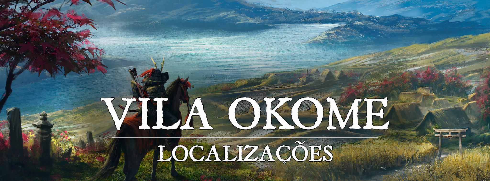

Vila Okome
“Arroz e Soja”
Descrição
Com um grande foco na agricultura, a Vila Okome, nasceu para abrigar alguns dos melhores campos produtores de arroz e soja de Turgon, o Império das Nuvens. A vila em si não é muito grande, possui poucos moradores, porém, todos ali compartilham um propósito, plantar arroz e soja. Claro, sempre se preocupando em buscar as bênçãos do Grande Kappa das colheitas.
Descrição Visual:
imx-awan-samuraivillage.png |Vila Okome
{kind=link}
Cercada de diversos campos agrícolas, a pequena Vila Okome tem uma aparência comum, como a de qualquer outra vila de Turgon, o que a diferencia de fato são as larguras de seus campos, que se somados conseguem ser maiores do que a própria vila em si.
Sociedade
População:
A população da vila Okome é formada principalmente por humanos, porém, é comum encontrar alguns poucos elfos da floresta. Em um número muito menor, é possível encontrar descendentes de youkais que moram nas redondezas.
Cultura:
A cultura agrícola é algo que foi marcado nos moradores da vila Okome desde a sua fundação, já que inicialmente, a vila inteira pertencia apenas a um senhor feudal que controlava a produção de arroz e soja em Turgon. Mas, como grande parte do povo do Império das Nuvens, o povo da vila Okome mantém suas tradições e ritos de adorar aos quatro kamis e a deusa Inari, sempre com muito respeito às suas divindades.
Adicionalmente, o povo da vila adora um pequeno kami que habita dentro da lagoa Daizu, o chamam apenas de o Grande Kappa das Colheitas que, como o nome sugere, abençoa as colheitas da vila em troca de uma pequena porção da mesma. O Kappa não multiplica de fato as quantidades de arroz e soja colhidos, mas aumenta consideravelmente a qualidade dos bens colhidos, dando vida a ingredientes que deixam qualquer refeição deliciosa.
Caráter:
O povo da vila é rigoroso e disciplinado, atitude essa que se dá principalmente pelo fato da vila ser formada majoritariamente por agricultores. Mesmo que não seja um ponto turístico a ser visitado, a população da vila não costuma destratar nenhum viajante, pelo menos não sem um bom motivo.
Datas e Festividades:
Além dos festivais de cada uma das estações (citados nas outras cidades grandes de Turgon), os agricultores da vila Okome tem o costume de, ao fim de cada estação de colheita, levar quinze por cento da produção daquela estação até a beira da lagoa Daizu e despejar sobre as águas da lagoa aquela parte da colheita em sacrifício para o kami Kappa.
Religião:
Assim como todas as cidades de Turgon, o povo da Vila Okome adora a Inari, a deusa raposa da prosperidade, dos andarilhos e dos espíritos da natureza. O povo é muito religioso, mas sua cultura não exalta a adoração como outros povos
Economia
O grande pilar da economia de Vila Okome são os produtos de seus campos, arroz e soja. É muito comum encontrar diversas caravanas mercantes que passam pela vila, tanto para vender alimentos e provisões quanto para comprar os ingredientes plantados na vila para revender em outros pontos de Turgon
Governo
A vila é governada por Nita Raisu, uma velha senhora que assumiu o governo da vila depois da morte de seu marido Baisen Raisu, um homem que era muito respeitado dentre os agricultores. Nita costuma buscar conselho nos principais chefes de família da vila quando tem que tomar alguma decisão, mas a última palavra vem sempre dela
Poderio Militar:
A vila é protegida por espadachins guardas contratados pela própria Liga de Jade que é a maior parceira comercial da vila Okome. Em troca de receber prioridade em seus pedidos, a Liga de Jade oferece proteção aos campos da vila com seus mercenários e guardas contratados.
Conflito
A Vila Okome sempre fugiu de qualquer conflito direto, o objetivo maior de seus moradores sempre foi e sempre será cuidar de suas plantações. Mas, isso não quer dizer que eles vivem completamente em paz já que os produtos da vila são constantemente alvos de ladrões e bandidos.
Organizações Relevantes
A Liga de Jade: Por ser a maior parceira comercial da vila Okome, a Liga de Jade estabeleceu um posto de controle de mercadorias na cidade, tanto para gerenciar suas encomendas e produtos quanto para vigiar os campos da vila com seus mercenários contratados.
Locais Relevantes
Lagoa Daizu: A Lagoa Daizu é uma grande lagoa que fica próxima da vila Okome, desta lagoa que a vila abastece suas fontes de água e faz os escoamentos para seus campos de arroz. O fundo da lagoa também é o lar do Grande Kappa das Colheitas.
NPCs Relevantes
unknown (39).png |O Grande Kappa das Colheitas
{kind=link}
O Grande Kappa das Colheitas é um kami não muito poderoso que mora na Lagoa Daizu. O Kappa sempre pede quinze por cento da produção de cada estação de colheita em troca de abençoar o restante com uma qualidade impressionante.
O Kappa quase nunca é visto fora de sua lagoa, a não ser quando vai buscar suas oferendas.
unknown (40).png |Nita Raisu
{kind=link}
Nita Raisu é a sábia anciã que cuida do governo da pequena vila. Uma mulher humilde e amável, cheia de boas intenções e conselhos para dar, mas, não se engane, Nita se torna uma verdadeira fera quando alguém prejudica suas colheitas ou fere seus campos de arroz.
Origem
Em sua origem, a mais de 600 anos, a Vila Okome era a propriedade de um senhor feudal chamado Komi Daisuke que controlava suas terras e seus súditos para produzir quantidades enormes de arroz e soja. Porém, Daisuke não era bem visto entre seus súditos, já que o mesmo não se importava com a forma que os moradores de suas terras viviam e nem se quer mostrava qualquer afeição por eles, ele era cego na renda que as terras geraram.
Então, um dia, os moradores daquelas terras resolveram se juntar e armar um plano contra o seu tirano senhor feudal, fazendo uma armadilha para o mesmo quando ele estivesse voltando de suas viagens à capital. O tolo Daisuke caiu na armadilha de seus súditos e ficou encarcerado nos estábulos da vila durante quase um mês. Depois de seu tempo de cárcere, a mente de Daisuke estava completamente afetada e perturbada, já que tudo que ele via em todos aqueles dias eram lavagens e estrume de cavalo.
Para se livrar de seu castigo, o povo da vila obrigou Daisuke a assinar um documento que passava toda a propriedade daquelas terras para ser dividida entre seus súditos, e isto foi feito. Daisuke então foi liberado de sua prisão, mas como sua mente já estava deteriorada demais com sua experiência traumática, ele enlouqueceu e fugiu da vila, ninguém nunca mais soube sobre seu paradeiro.